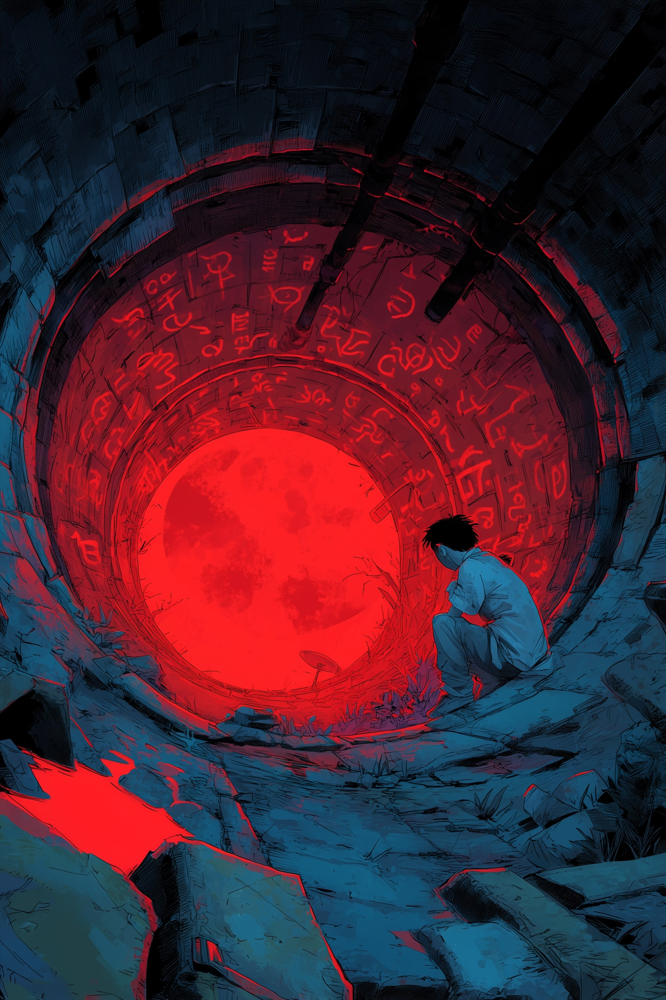
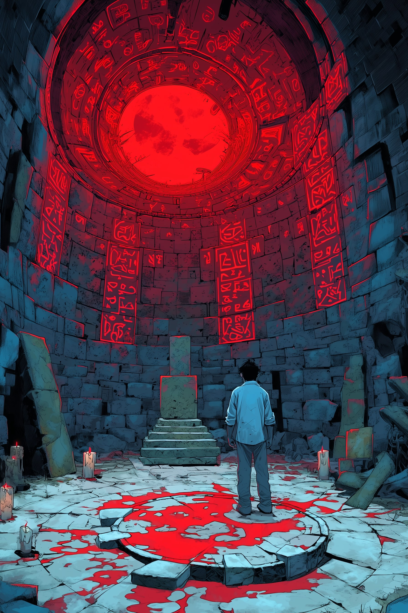
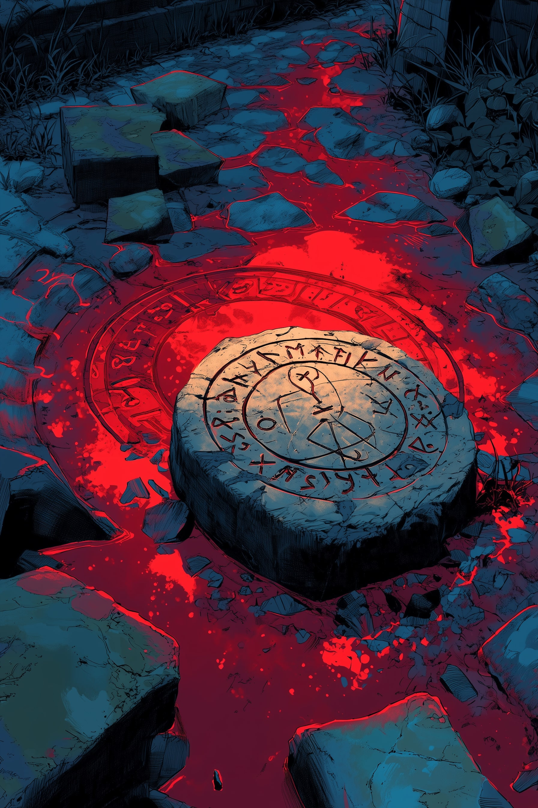
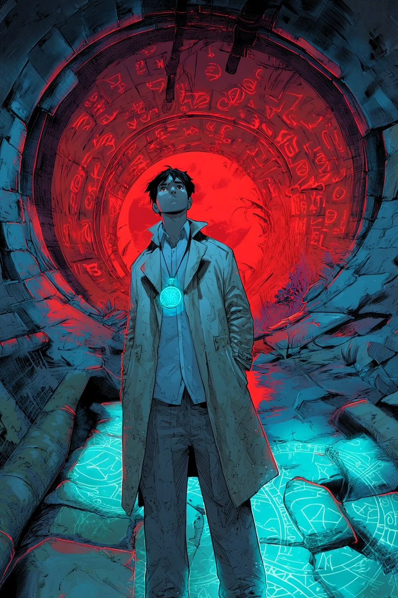

As a boy, he crept beneath the Mansion. Through a crack in the wall, he saw them — the robed figures. Chanting.
The glyphs were red. The moon was low. Something died that night. Something was offered.

He came back alone. The wax had melted. The blood had dried. But the glyphs were still glowing.
The echoes had not left. And in the center, it waited.

A stone. Smooth. Marked. Still warm. The Rune whispered, even in silence. He tied it to a shoelace and made it his.

He never left the sewers. He learned their rhythm. Their voice. The glyphs react now when he walks past.
The Don doesn’t need to speak. The pipes speak for him.